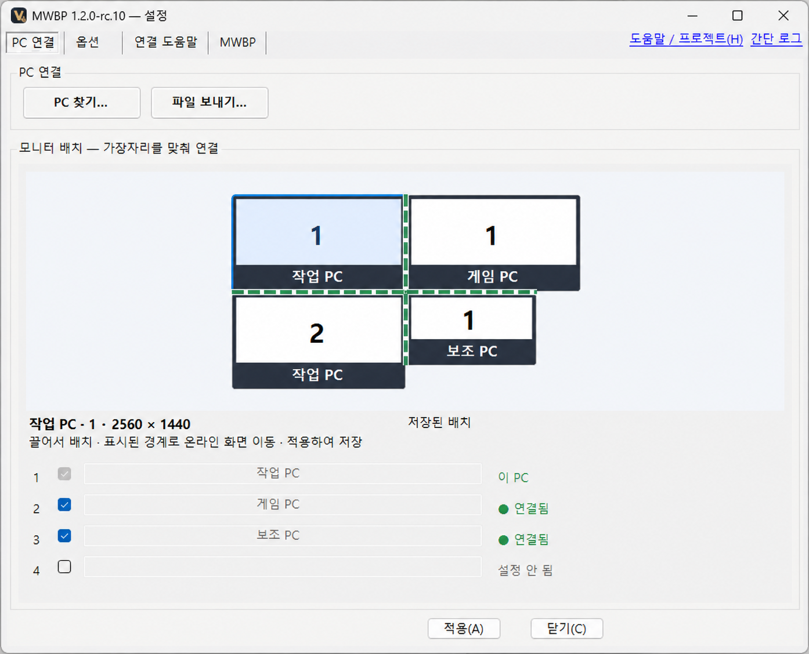

화면은 자유롭게.
모니터를 하나씩 끌어 배치하세요. 맞닿은 가장자리로 다른 PC에 넘어갈 수 있습니다.
 VEIL MWBP
VEIL MWBP

모니터를 하나씩 끌어 배치하세요. 맞닿은 가장자리로 다른 PC에 넘어갈 수 있습니다.
PC를 바꾸거나 가장자리로 넘어갈 때 쓸 키를 직접 정하세요.
복사한 내용을 함께 쓰고, 파일을 보낼 PC를 고르세요. 중단된 전송도 이어 보낼 수 있습니다.
각 PC에 같은 버전을 설치하세요.
업데이트해도 연결·배치·단축키는 그대로입니다.
설치 파일 실행 → MWBP 설치 → Windows 승인 완료.
양쪽 확인 코드가 같으면 양쪽에서 승인하세요.
화면을 실제 위치에 맞춰 붙이고 적용하세요.
두 PC에서 MWBP를 켜고, Windows 방화벽에서 MWBP의 네트워크 사용을 허용했는지 확인하세요. 계속 보이지 않으면 PC 찾기에 상대 PC 이름이나 IPv4 주소를 입력하세요.
연결할 때는 양쪽 화면의 확인 코드가 같은지 확인한 뒤 양쪽에서 승인하세요.
마우스·키보드가 다른 PC에 묶여 클릭할 수 없다면, 장치가 직접 연결된 PC에서 Ctrl+Alt+Backspace를 눌러 그 PC로 긴급 복귀하세요. 단축키를 꺼도 사용할 수 있으며 재연결 완료를 기다리지 않습니다. Windows나 장치가 키 입력 자체를 전달하지 않는 장애까지 복구한다고 보장하지는 않습니다.
클릭할 수 있다면 PC 연결 → 마우스 입력 복구로 입력 처리와 연결을 다시 시작할 수 있습니다. 공유가 잠시 끊기며 연결·배치·전환 키·커서 설정은 유지됩니다.
전체 화면 게임에서도 전환 키로 넘어가려면 옵션 → 전체 화면 앱에서 화면 전환 차단을 끄세요. 연결된 PC에도 같은 설정이 적용됩니다.
버튼으로 해결되지 않는 지연도 있습니다. Windows 커서 사용은 이 PC의 대체 커서만 끄며, Windows 마우스 키·숫자패드·PC 전환 설정은 바꾸지 않습니다.
큰 파일은 파일 보내기… 메뉴에서 받을 PC와 파일을 골라 보내세요. 드래그로도 보낼 수 있습니다. 양쪽 PC에 같은 버전을 설치하고 파일 전송을 허용해야 합니다.
기본으로 켜진 자동 전송 300MB 제한은 복사한 파일 하나가 300MB를 넘을 때 자동 공유를 막는 설정입니다. 정확히 300MB인 파일은 허용하며, 파일 전송 전체의 크기 제한은 아닙니다.
기존 연결·모니터 배치·단축키·전송 기록과 로그인 시 자동 실행 선택을 유지합니다. 새로 설치할 때는 자동 실행이 기본으로 켜집니다.
설치된 버전은 설정 창 제목이나 정보에서 확인하세요.
조작을 받는 PC에서 설정을 열고 MWBP 탭의 설치 복구… 버튼을 누르세요. Windows 승인은 그 PC에서 직접 진행하세요.
이 설정은 연결된 PC가 관리자 화면을 조작하도록 허용합니다. 같은 Windows 계정의 다른 앱이 이 권한을 악용할 수도 있습니다. Windows 정책으로 허용되지 않아도 일반 마우스 공유와 파일 전송은 사용할 수 있습니다.
설치 파일에 제작자를 확인하는 디지털 서명이 없기 때문입니다. Windows가 게시자를 확인하지 못해 표시하는 안내입니다.
설치 전에 다운로드 파일 정보에서 파일 이름과 출처를 확인하세요.
Windows 11 64비트(x64)에서 동작을 확인했습니다. 다른 Windows 구성과 ARM64에서는 동작을 확인하지 않았습니다.
PowerToys나 .NET은 따로 설치하지 않아도 됩니다. 설치 후 바탕화면이나 시작 메뉴에서 VEIL MWBP를 찾아 실행하세요.
Windows 11 x64에서 확인 · 버전 1.2.0-rc.17